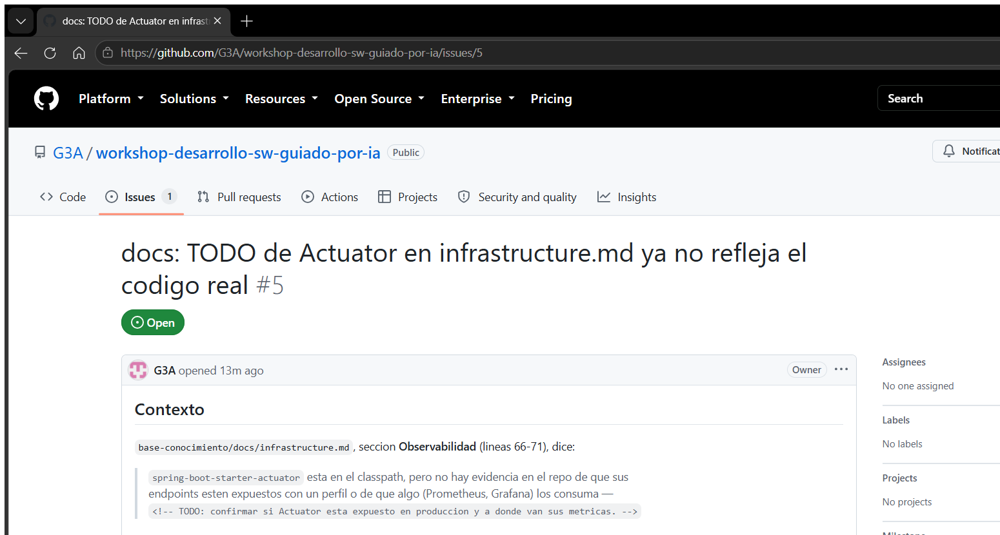
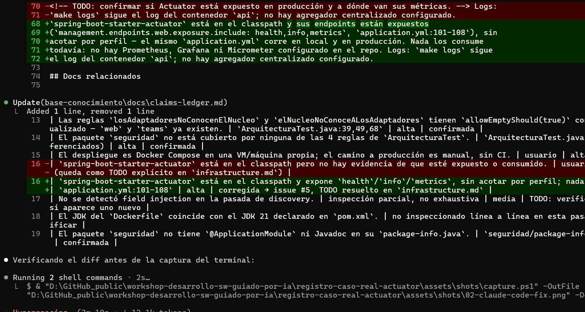
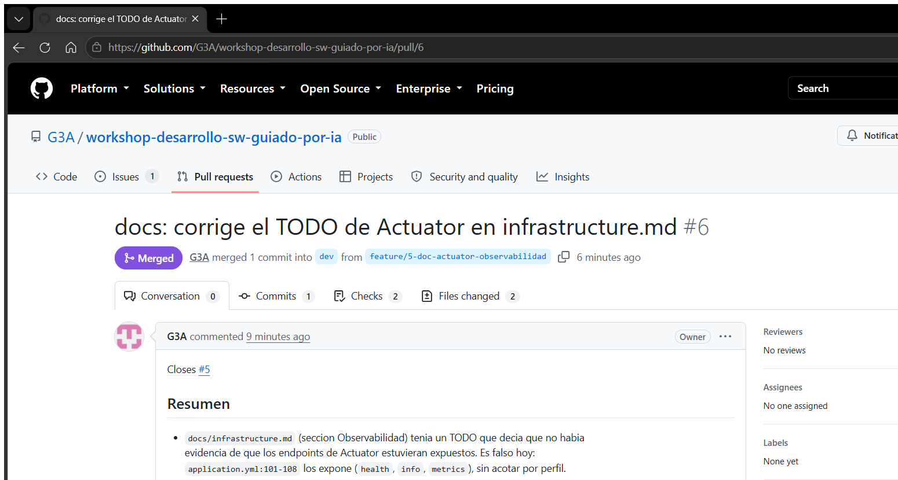
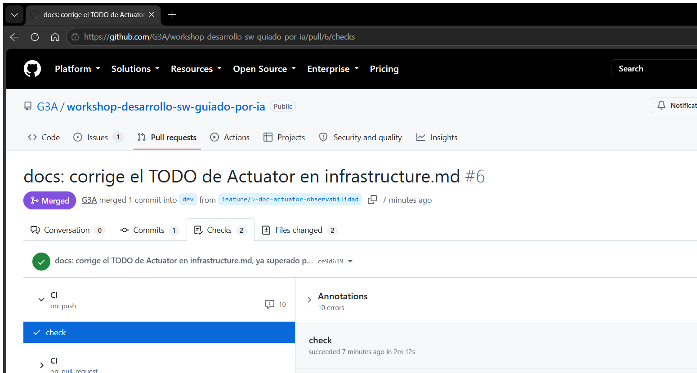
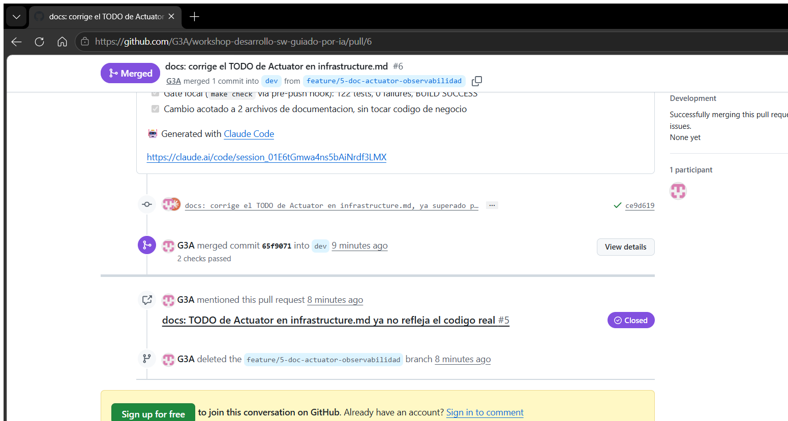
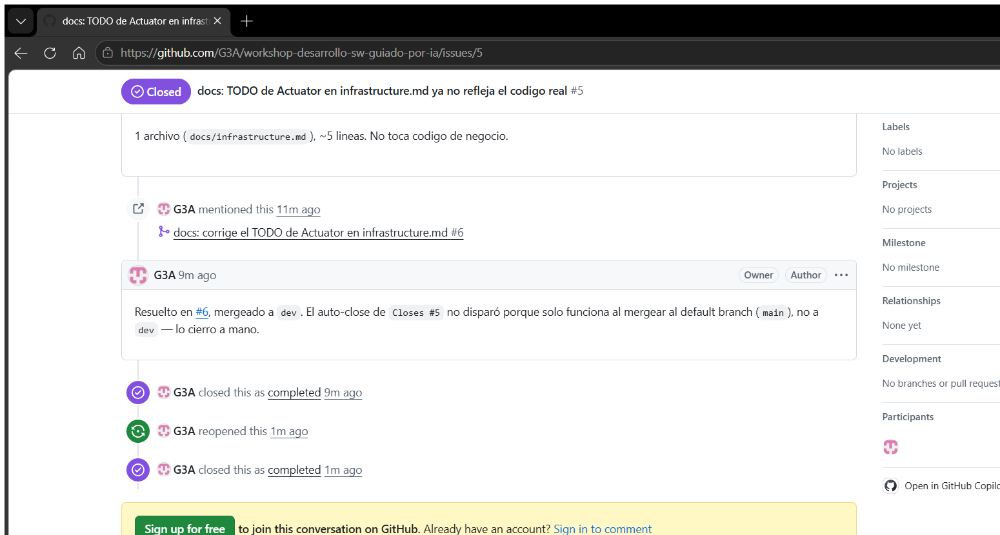

caso real
De un TODO desactualizado a un PR mergeado — un ciclo real, fotograma a fotograma
Esta página documenta una ejecución real del
proceso operacional con IA sobre
base-conocimiento, un servicio Java/Spring real de este monorepo — no un mockup.
Cada captura de esta página es una captura de pantalla real, tomada en el momento en
que ocurrió cada paso; el contenido de código y terminal es texto real, copiado tal
cual salió. Nada de esto es actuado.
El caso
base-conocimiento/docs/infrastructure.md tenía, en su sección
Observabilidad, un TODO que decía literalmente: "no hay evidencia en el repo de que
[los endpoints de Actuator] estén expuestos". Es un doc generado por la skill
agent-context-java hace unas semanas — y el código lo superó: revisando
application.yml:101-108 se confirma que los endpoints sí están expuestos
(health, info, metrics). El mismo hallazgo ya estaba
anotado en docs/claims-ledger.md:16 como pendiente de resolver. Caso chico,
real, verificable — perfecto para mostrar el ciclo completo sin arriesgar nada del RAG.
bo1Tomar el hallazgo → issue real de GitHub
El hallazgo no se inventó: es la comparación directa entre lo que dice el doc y lo que dice el código.
| Dice el doc | Dice el código | |
|---|---|---|
docs/infrastructure.md:68-70 |
"no hay evidencia... de que sus endpoints estén expuestos" | application.yml:101-108 — exposure.include: health,info,metrics |
Con esa evidencia se abrió el issue real con gh issue create — mismo flujo que
documenta el nodo bo1 del proceso.

gh issue create con el contexto completo
(qué dice el doc, qué dice el código, qué hace falta) — el issue nace con evidencia, no con
una frase suelta.c4a · c2Rama, plan e implementación en Claude Code
Rama feature/5-doc-actuator-observabilidad desde dev. El cambio es
chico (2 archivos de documentación) así que el "plan" fue directo: corregir el texto de
Observabilidad con la cita exacta a application.yml, y actualizar la fila del
hallazgo en claims-ledger.md de "confirmada (queda como TODO)" a "corregida".

Edit sobre los dos archivos, con la línea
exacta del código (application.yml:101-108) citada en el propio doc corregido
— para que la próxima persona que lo lea no tenga que confiar, pueda verificar.c3Verificar — el gate local real
Cambio de solo documentación, pero el gate corrió igual: el hook pre-push de
Lefthook ejecuta make check sobre base-conocimiento en cada push, sin
excepción para docs. Esta es la salida real, verbatim, del momento en que se pusheó la
rama — no un resumen.
[INFO] Running co.g3a.baseconocimiento.recuperacion.RrfFusionTest [WARNING] Tests run: 2, Failures: 0, Errors: 0, Skipped: 2, Time elapsed: 0.007 s [INFO] [INFO] Results: [INFO] [INFO] Tests run: 122, Failures: 0, Errors: 0, Skipped: 2 [INFO] [INFO] ------------------------------------------------------------------------ [INFO] BUILD SUCCESS [INFO] ------------------------------------------------------------------------ [INFO] Total time: 01:08 min OK -- the repo is green ✔️ base-conocimiento-check (91.83 seconds)
p1Abrir el PR real
gh pr create --base dev, con Closes #5 en el body y el resumen de
qué cambió y por qué — mismo patrón que ya usa este monorepo.

dev desde
feature/5-doc-actuator-observabilidad, con Closes #5 y el resumen
en el body — contenido real, sin cambios desde que se abrió. (Esta captura se tomó
después del merge, por eso el badge de arriba ya dice "Merged" — el fotograma 6 muestra ese
paso en detalle.)G5CI en verde
GitHub Actions corre make ci en cada push/PR — el mismo make check
del hook local, más el escaneo de secretos. Se esperó con gh pr checks --watch
hasta que terminara.

check succeeded now in 2m 12s.
Las 10 "annotations" que muestra son de Checkstyle, no bloqueante (deuda de brownfield ya
documentada en AGENTS.md), no algo que introdujo este cambio.mgMerge real
gh pr merge --merge hacia dev.

merged commit 65f9071 into dev, "2 checks
passed", y GitHub enlazó solo la mención al issue #5 (por el Closes #5 en el
body) — aunque, como se ve en el hallazgo de abajo, mencionar no es lo mismo que cerrar.Hallazgo real: el issue no se auto-cerró
Acá el caso real enseñó algo que un caso inventado no hubiera mostrado: Closes #5
en el body del PR no cerró el issue al mergear.
Closes #N solo
dispara cuando el PR mergea al default branch del repositorio — acá main,
confirmado con gh repo view --json defaultBranchRef. Este PR mergeó a
dev, que no es el default branch, así que el issue quedó abierto y hubo que
cerrarlo a mano con gh issue close 5 --comment "...", dejando explicado el
porqué en el propio comentario de cierre.
main + dev):
no confíes en el auto-close si el flujo del equipo mergea a algo distinto del default branch —
verificalo una vez con gh repo view --json defaultBranchRef y ajustá el checklist
del equipo (Step J del ciclo de entrega: "postear resumen y actualizar estado" cubre
exactamente este caso).El cierre: qué se capturó de cada paso del proceso
El proceso completo tiene 46 pasos en 6 carriles. Esta tabla es honesta sobre qué de ese proceso quedó capturado acá y qué no:
| Paso del proceso | Qué se capturó acá |
|---|---|
bo1 Tomar el issue | Captura real — fotograma 1 |
c1 Planificar | Sin captura — el cambio fue chico, el plan quedó en el body del issue |
c4a Crear rama · c2 Ejecutar | Captura real del diff en Claude Code — fotograma 2 |
c3 Verificación 4 capas | Salida real de terminal (texto verbatim) — fotograma 3 |
c4b/c4c Commit + push | Sin captura aparte — visible en el mismo push que disparó el fotograma 3 |
p1 Abrir PR | Captura real — fotograma 4 |
G5 CI en verde | Captura real — fotograma 5 |
cr/G6 Revisión | No aplica — repo de un solo colaborador, sin reviewer que asignar |
mg Merge | Captura real — fotograma 6 |
cd1/G8 CD a staging | No aplica — base-conocimiento no tiene despliegue automático a staging, solo CI |
c5 Retrospectiva | Esta misma sección + el hallazgo del auto-close |